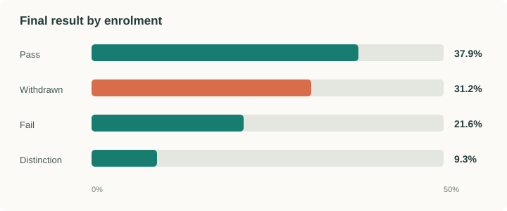
Withdrawal is a major outcome—not a small edge case
Withdrawals account for 31.2% of enrolments, exceeding the 21.6% that end in failure. This suggests that student-support efforts should not focus only on poor final marks; students who disengage and leave are a large group of their own.
Observation: Pass is the largest single category at 37.9%, but withdrawal is the second-largest outcome. Percentages are rounded.
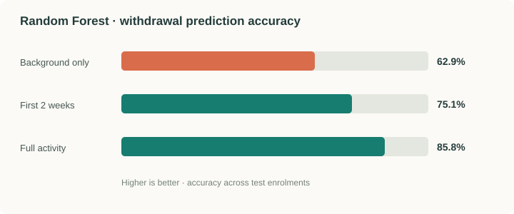
Learning activity makes predictions much stronger
Using background information alone, the Random Forest model achieved 62.9% accuracy and caught 53.1% of withdrawals. Adding just the first two weeks of clicks increased accuracy to 75.1%. Using full-course activity reached 85.8% accuracy and caught 89.3% of withdrawals.
Pattern: behaviour during the course contains substantially more predictive information than background characteristics alone. The full-activity score is useful for comparison, but it may arrive too late for early intervention; the first-two-week result is closer to the practical goal.
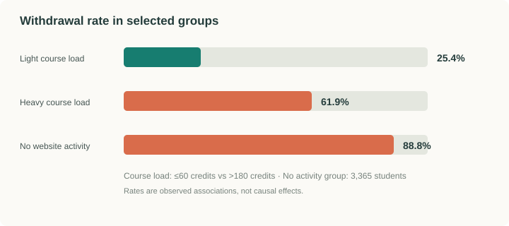
Course load and lack of engagement stand out
Withdrawal rises from 25.4% for students taking a light load of up to 60 credits to 61.9% for those taking more than 180 credits. Separately, 88.8% of the 3,365 students with no recorded website activity withdrew.
Interpretation: heavy course loads may be a useful point for guidance at registration, while no activity may be an immediate signal for supportive outreach. These are associations, not proof that course load alone causes withdrawal.
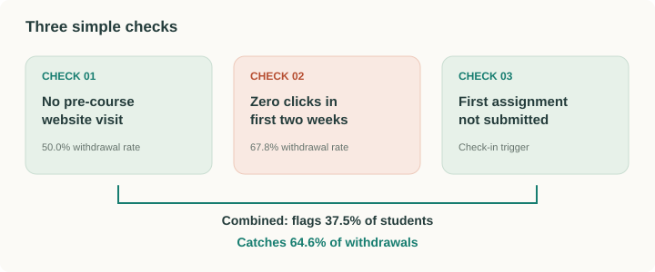
Three simple checks catch nearly two-thirds of withdrawals
Flag students who never opened the website before the course began, had zero clicks in the first two weeks, or did not submit the first assignment. Combined, these checks flag 37.5% of students and catch 64.6% of withdrawals.
The rules are easy to explain and could be implemented with basic database queries. They are not a substitute for asking students what support they need; they are a practical way to decide when to check in.
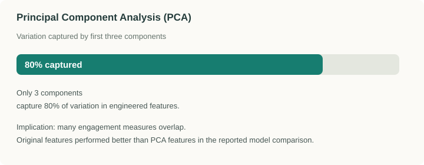
Many features overlap—and withdrawal is not the same as low marks
Three principal components captured 80% of the variation in the engineered features, suggesting that measures such as total clicks, active days, active weeks and pages visited partly reflect the same underlying engagement pattern. However, the report found that PCA-transformed inputs performed worse than the original features, so the main results retained the original columns.
Another notable result is that withdrawn and failed students had similar average marks (64.1 versus 64.6 out of 100). Withdrawn students were active for about 51 days on average, compared with 148 days for students who failed. They may differ more in how long they stay engaged than in the marks they earn.
Detailed plots from the analysis outputs
The following figures are the plots exported by our analysis pipeline. They add detail to the summary charts above and show how the outcome distribution, engagement patterns, early-warning checks, models, clustering and PCA behave in the saved results.
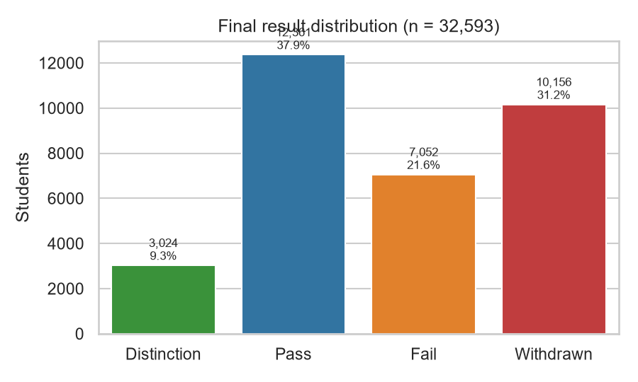
Withdrawal affects almost one in three enrolments
The saved output contains 32,593 enrolments from 28,785 students. There were 12,361 Pass results (37.9%), 10,156 Withdrawals (31.2%), 7,052 Fails (21.6%) and 3,024 Distinctions (9.3%). The withdrawal group is large enough that predicting withdrawal deserves separate attention rather than treating it as a rare exception.
Observation: the unit counted here is an enrolment, not a unique person; a student can contribute more than one enrolment.
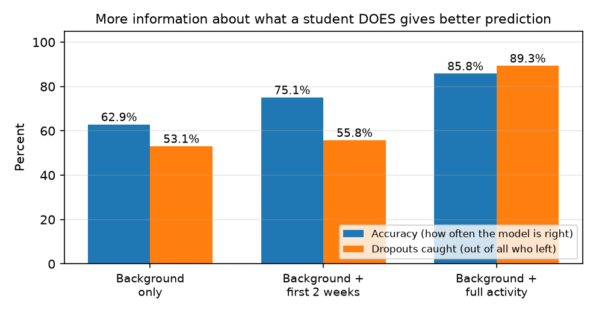
Engagement history adds predictive signal
In the staged binary comparison, background-only features reached 62.9% accuracy and 53.1% withdrawal recall. Adding the first two weeks of clicks raised accuracy to 75.1% and recall to 55.8%. Full-course activity reached 85.8% accuracy and 89.3% recall.
Interpretation: the first-two-week model is the more relevant early-warning comparison. Full-course activity is a reference benchmark, not a promise that the same performance is available at the beginning of a course.
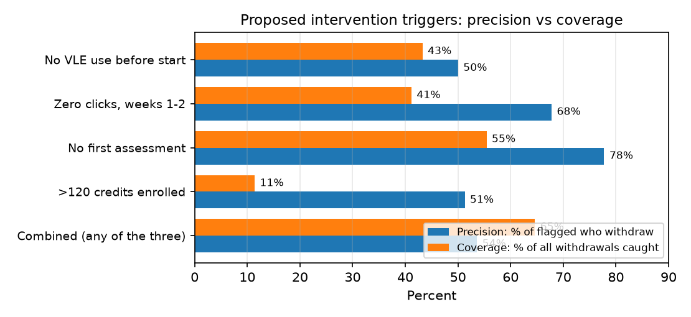
One rule is precise; combining rules catches more people
In the saved rule output, not submitting the first assessment had 77.8% precision and identified 55.4% of withdrawals. Zero clicks in weeks 1–2 had 67.8% precision and 41.2% recall. The combined rule—no pre-course VLE visit, zero clicks in weeks 1–2, or no first assessment—flagged 37.5% of enrolments, with 53.6% precision and 64.6% recall.
Practical trade-off: an individual trigger can be more selective, while the combined rule catches a larger share of withdrawals. A flag should prompt supportive human outreach, not an automatic adverse decision.
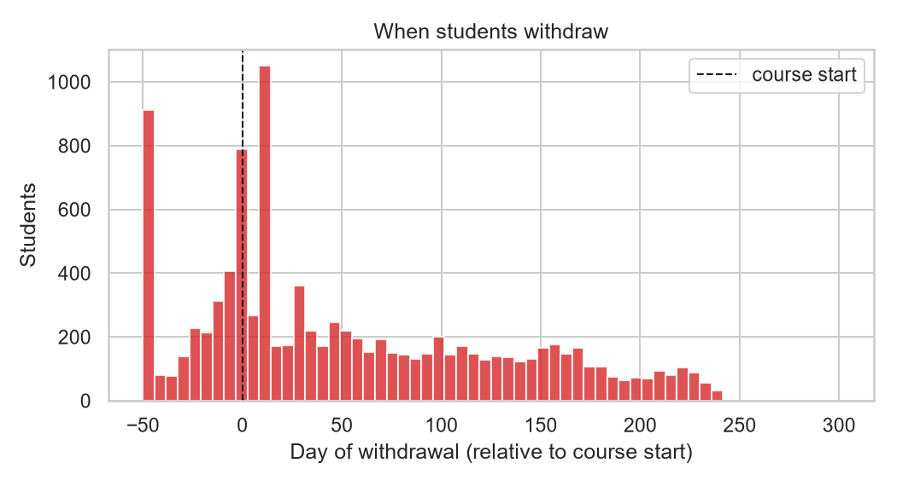
Withdrawal risk is time-sensitive
The saved analysis reports a median withdrawal day of 27 relative to course start. About 46.6% of withdrawals occurred before the first assessment was due, and a further 12.5% occurred within 30 days after that due date.
Pattern to notice: the histogram includes negative day offsets, meaning some withdrawal records pre-date the scheduled start under the dataset's date convention. This is a useful reminder to define the time origin carefully when designing a live early-warning workflow.
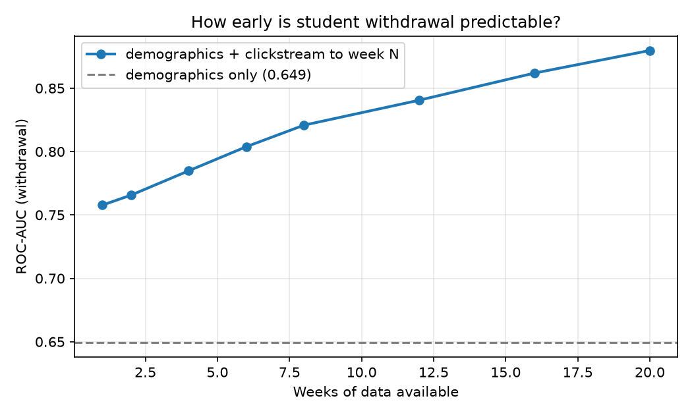
Prediction becomes more discriminative with more weeks of activity
The exported early-warning curve reports ROC-AUC of 0.758 after one week, 0.766 after two weeks, 0.785 after four weeks, 0.821 after eight weeks and 0.880 by week 20. The demographic-only benchmark is about 0.649.
Interpretation: engagement provides signal early, and the signal strengthens as observations accumulate. AUC evaluates how well the model ranks higher-risk enrolments above lower-risk ones; it is not the same as accuracy or the share of withdrawals caught at a particular threshold.
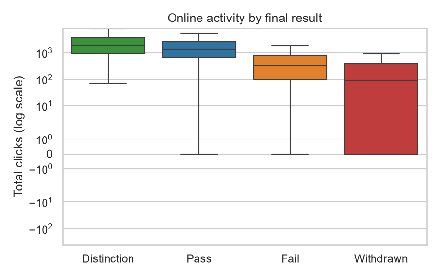
Withdrawn students typically leave a shorter activity trace
The relationship output reports mean total clicks of 89 for Withdrawn enrolments, compared with 317 for Fail, 1,343 for Pass and 1,896 for Distinction. The distributions are skewed, so a logarithmic axis is used to make both low- and high-activity enrolments visible.
Caution: these are retrospective groups defined by final outcome. Total clicks across an entire course are useful for explaining patterns, but they cannot all be treated as features available early in the course.
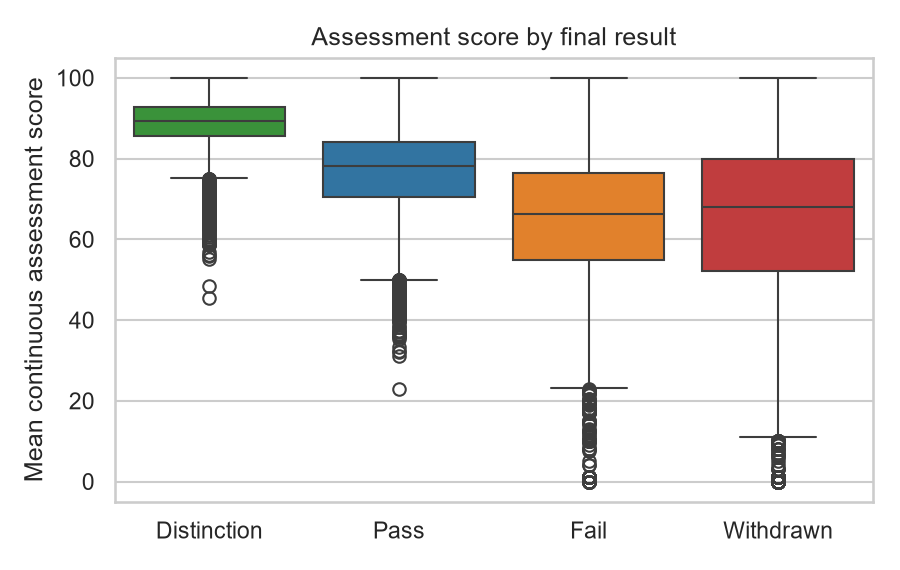
Fail and withdrawal look similar on marks alone
The saved relation summary reports mean assessment scores of 88.39 for Distinction, 76.53 for Pass, 64.61 for Fail and 64.11 for Withdrawn. The near-equal means for Fail and Withdrawn suggest that final marks alone do not explain why one enrolment ends in failure while another ends in withdrawal.
Interpretation: the score distributions overlap, and scores may be unavailable for students who never submitted work. Engagement duration and submission activity add context, but neither should be interpreted as a cause by itself.
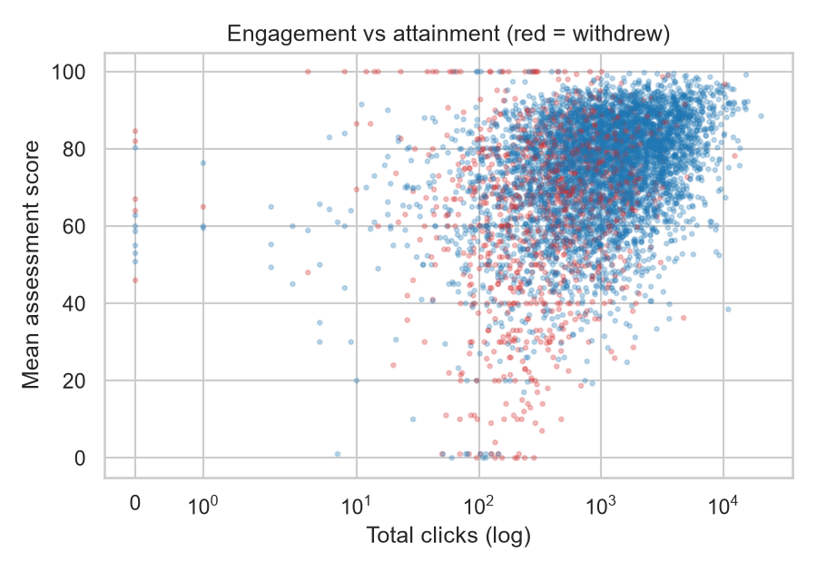
More activity often coincides with higher scores, but the relationship is not deterministic
The scatterplot shows broad variation in scores at similar levels of activity. Higher-click enrolments appear more frequently among Pass and Distinction outcomes, while Withdrawn enrolments are concentrated at lower activity levels; however, the colours overlap substantially and some low-activity enrolments still have scores.
Observation: the very wide range of click counts motivates the log axis. A simple click threshold is an interpretable screening signal, not a complete description of student engagement or ability.
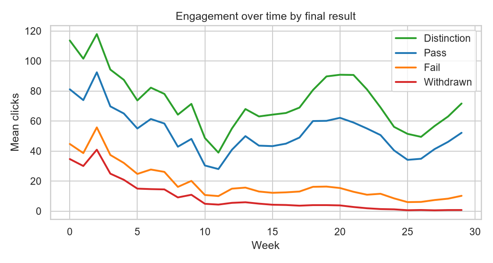
Engagement trajectories diverge over the course
The weekly lines show higher and more sustained average activity among Distinction and Pass enrolments, while activity for Withdrawn enrolments falls away much earlier. The gap is consistent with the broader finding that active weeks and time since last activity are informative signals.
Important limitation: this is a descriptive chart grouped by eventual outcome. It helps explain the data, but using later-week values to predict an earlier outcome would leak future information into the prediction task.
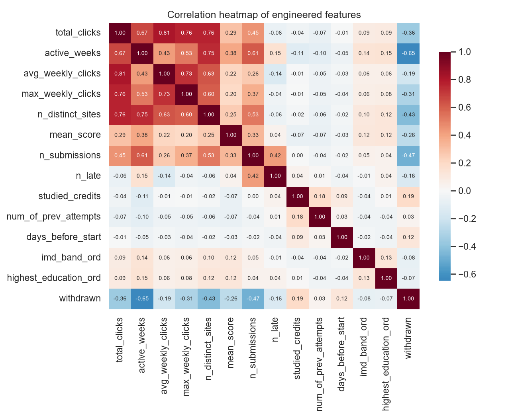
Several engagement features measure related behaviour
The heatmap compares total clicks, active days and weeks, weekly-click summaries, number of distinct sites, assessment measures and background variables. Many click-volume and activity-duration features move together, so they contain partly overlapping information.
Model implication: correlated predictors can make feature importance harder to interpret as separate effects. The heatmap shows association between variables, not a causal diagram; it should be read alongside the model comparisons and the data-processing notes.
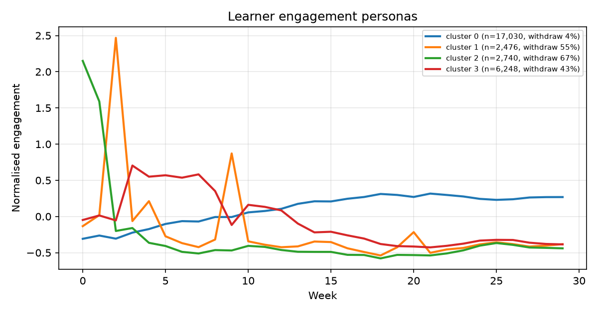
Clustering separates sustained engagement from high-risk trajectories
The four-cluster output describes distinct profiles: the largest group (17,030 enrolments) has about 3.8% withdrawal and 82.6% pass; one smaller group (2,740 enrolments) has about 67.2% withdrawal; another group of 2,476 has about 55.1% withdrawal; and a 6,248-enrolment group has about 42.9% withdrawal.
Limit: the reported silhouette score for four clusters is low (about 0.084), so the groups overlap. They are useful exploratory personas for discussion, not definitive natural categories of students.
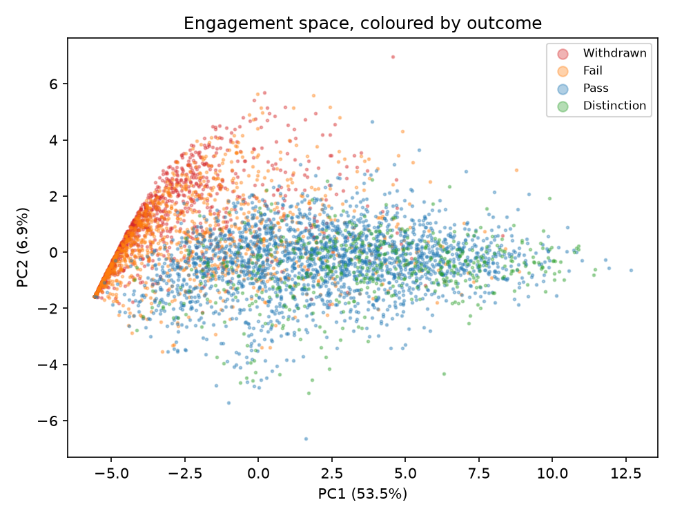
The first two PCA dimensions do not cleanly separate the outcomes
In this exported plot, PC1 explains 53.5% of variance and PC2 explains 6.9%. Pass, Fail, Withdrawn and Distinction points overlap in the two-dimensional projection, so these two axes alone do not neatly separate final outcomes.
Interpretation: PCA is useful for visualising broad structure and redundancy, but the projection discards information. Overlap in two dimensions does not mean that all higher-dimensional prediction signal is absent.
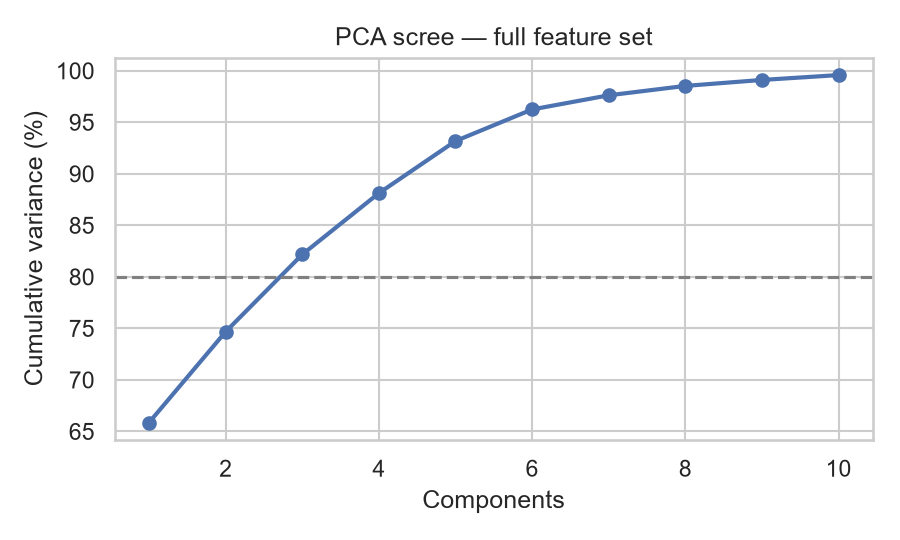
PCA reduces dimensionality, but the exported summaries need reconciliation
The relation log associated with this scree plot reports 65.9% for PC1, 74.7% for the first two components and 82.2% for the first three. However, another saved output, results.json, reports 13 components to reach 80% for a different variance sequence. The PCA outcome scatterplot also uses a different PC1/PC2 variance split.
Data-quality note: these saved PCA outputs are inconsistent and likely come from different feature sets or processing runs. We retain the supplied figure for transparency, but the exact component count should be regenerated from one common pipeline before it is presented as a single definitive result.
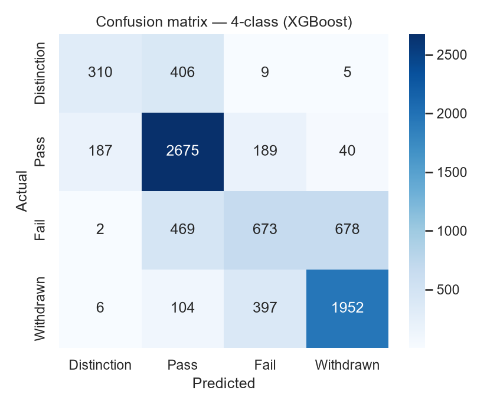
Pass and Withdrawn are clearer than the boundary between Fail and Withdrawn
The confusion matrix correctly predicts 2,675 Pass enrolments and 1,952 Withdrawn enrolments. It also shows important errors: 678 actual Fail enrolments are predicted as Withdrawn, 469 as Pass, and 397 actual Withdrawals are predicted as Fail. Distinction is often confused with Pass (406 cases).
Interpretation: the four-class task is harder than separating withdrawal from non-withdrawal, because Fail and Withdrawn can share similar observed marks and differ in persistence/engagement. The saved specification reports 69.24% overall accuracy for this confusion matrix; the macro-F1 in the JSON outputs differs across saved runs, so we avoid treating one macro-F1 value as definitive.
What we learned
- Observation: 31.2% of the 32,593 enrolments withdrew, more than the 21.6% that failed.
- Pattern: engagement history substantially improves prediction over demographics alone; using only the first two weeks already raises accuracy to 75.1% in the staged comparison.
- Early signal: 46.6% of recorded withdrawals occur before the first assessment is due. The combined early-warning rules flag 37.5% of enrolments and identify 64.6% of withdrawals.
- Fail versus withdrawal: their average assessment marks are nearly identical (64.61 for Fail and 64.11 for Withdrawn), while mean active weeks are 10.5 versus 3.0 and mean total clicks are 317 versus 89.
- Assessment participation: the output reports 72.1% withdrawal among enrolments with a submission rate of at most 25%, compared with 1.6% for those submitting more than 75% of assessments. This is a strong retrospective pattern, but later submissions should not be used in an early model.
- Unexpected pattern: registration 100 or more days before start is associated with 38.8% withdrawal, while registering 0–14 days before start is associated with 19.8%. This is a subgroup association, not evidence that registering early causes withdrawal; course and student composition may differ.
- Forum participation: the saved relation output shows 34.1% withdrawal for none/low forum participation, compared with about 18.7–22.7% for the higher participation groups. The difference is more consistent with a threshold effect than a steady benefit from ever-increasing forum activity.
- Model comparison: in a separate classifier run, Random Forest achieved 84.36% accuracy and the best ROC-AUC (0.9298), while XGBoost achieved 84.44% accuracy. These results come from a different saved comparison than the staged timing results above and should not be mixed without confirming identical evaluation setups.
- PCA caution: the saved PCA figures and JSON do not agree on the explained-variance sequence or number of components required for 80%. Re-run the PCA export using one feature set before quoting a single final component count.
- Limitation: the data represent UK Open University courses from 2013–2014. Associations are not causal claims, and models should be validated on the target course and time period before being used to drive student-support decisions.